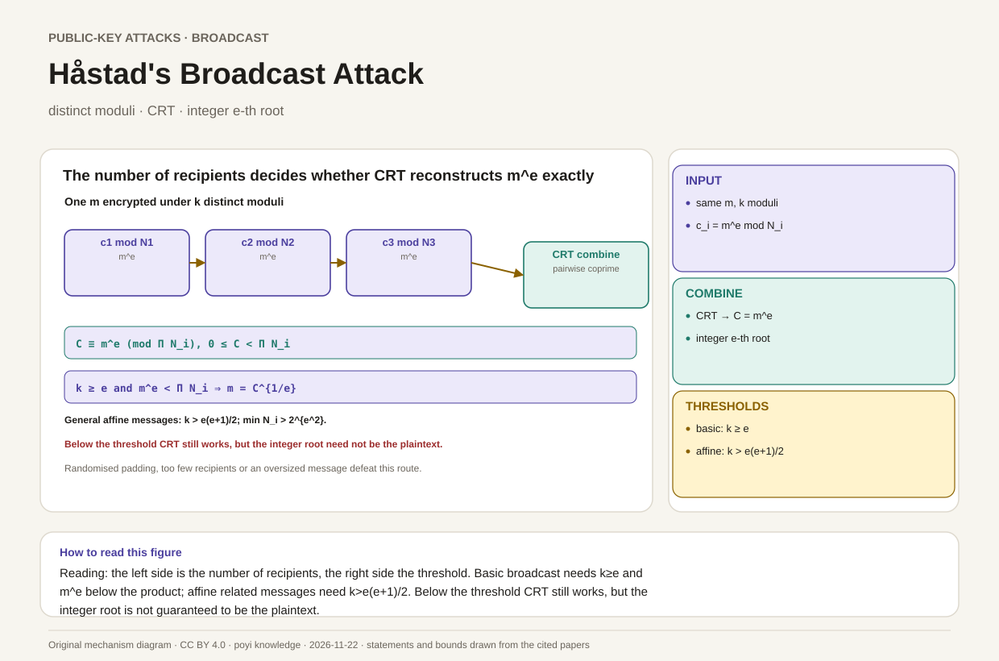
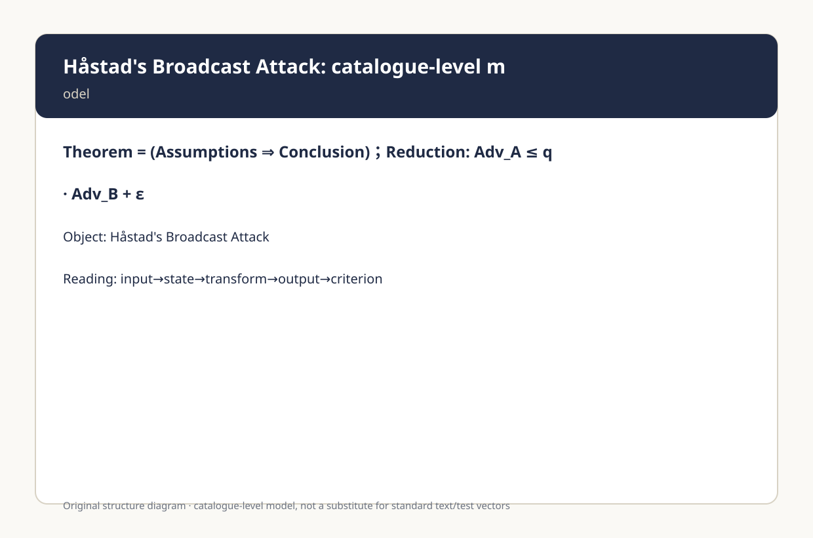

Principles
Theorem: Håstad's Broadcast Attack (Håstad 广播攻击). ### Broadcasting one message to several moduli
Suppose a message m is encrypted for k recipients with the same small exponent e and pairwise coprime moduli N1,…,Nk:
c_i = m^e mod N_i. If k ≥ e and m^e < ∏ N_i, the Chinese Remainder Theorem combines the congruences into
C ≡ m^e (mod ∏ N_i), with 0 ≤ C < ∏ N_i. Since m^e is also below the product, C equals the integer m^e, not merely a power modulo the product. Taking the integer e-th root of C recovers m. ### The general theorem for linearly related messages
Hastad’s 1988 theorem handles a more general setting: under the i-th modulus, a polynomial equation P_i(x) ≡ 0 (mod n_i) of degree at most d holds. If the number of equations satisfies k > d(d+1)/2 and the smallest modulus is large enough (the paper requires min n_i > 2^{d^2}), x can be recovered in time polynomial in k and log n_i. For RSA, d=e, so “affine related messages” need more than e(e+1)/2 recipients; this is a different threshold from the e recipients needed for the same message. ### The thresholds are not decoration
The basic broadcast condition k≥e comes from CRT: at least e congruences are needed to place m^e inside a full product. The general k>d(d+1)/2 condition comes from the dimension of the lattice/resultant elimination. Mixing the two thresholds produces false security conclusions. With randomised padding, the m_i no longer satisfy one low-degree polynomial, and both CRT and integer-root premises disappear.

Why it matters
RSA with e=3 is fast and attractive for constrained devices; but broadcasting the same message to three or more recipients without randomised padding places m^3 inside an integer ring larger than m^3, so CRT reconstructs it exactly. Hastad’s generalisation shows that even when the messages differ, enough recipients still leak the message if the messages follow a known affine relation.
OAEP-style randomised padding gives every recipient an independent random encoding, so the encodings no longer satisfy one low-degree polynomial. CRT then combines ciphertexts of different random polynomials, and the integer root no longer corresponds to the plaintext. “Some padding” is not enough: deterministic padding, fixed timestamps or predictable counters may preserve the relation.
When evaluating a broadcast protocol, ask: is the message the same, is e equal to 3 or 65537, are there at least e recipients, is every encoding independently randomised, and are the moduli pairwise coprime? These questions matter more than the nominal RSA modulus size.
Applications
- Confirm a common e and distinct N_i, with the N_i pairwise coprime; if two moduli share a factor, gcd(N_i,N_j) factors them and the attack is even simpler. 2. Collect at least e ciphertexts of the same message; check that m is below min N_i so that m^e < ∏ N_i. 3. Combine the ciphertexts by CRT to obtain C; take the integer e-th root; verify the result against every c_i. 4. If the messages are affinely related rather than equal, apply Hastad’s general theorem with k > e(e+1)/2 and the modulus lower bound. 5. Record the failure reason: randomised padding, too few recipients, message too large, or non-coprime moduli.
Treat broadcast as a special case of related messages in protocol review; require randomised padding for low-exponent encryption; require independent encoding for every recipient in group messaging. Test vectors should cover e=3 and e=65537, and the boundaries k=e and k=e+1.

Limits & attacks
- Too few recipients. The basic attack needs k≥e; the general affine theorem needs k>e(e+1)/2. One recipient short can be enough to fail. 2. m^e not below the product. CRT then yields only m^e modulo the product, and the integer root is not m; lattice methods or extra information are needed. 3. Non-coprime moduli. The CRT condition fails; however, gcd may then factor a modulus, which is a different attack. 4. Randomised padding. Every encoding differs, so the low-degree relation does not hold. 5. e too large. Thresholds and polynomial degrees grow with e; for e=65537 the general affine attack needs an unrealistic number of recipients. 6. Messages not affinely related. Hastad’s theorem requires a known low-degree polynomial; an arbitrary relation is not guaranteed to be solvable.
History
Hastad’s 1988 SIAM Journal on Computing paper proved the “solving simultaneous modular equations of low degree” theorem and applied it to low-exponent RSA broadcast. Its conditions k > d(d+1)/2 and min n_i > 2^{d^2} became standard parameter language for later related-message attacks.
The 1996 Franklin-Reiter attack handles related messages under one modulus; Hastad handles broadcast and affine relations under distinct moduli. Around 1997, Coppersmith’s small-root method systematised “known partial message or small root” problems. The three are often listed together, but their assumptions and mathematical tools differ.
Worked example & verification
Formal model and reproduction steps
[\Pr[\mathrm{Bad}_A(\lambda)]\le \varepsilon(\lambda)]
Håstad's Broadcast Attack: the registered public parameters, key material or randomness, and message are mapped through the stated transformation to an output checked against the registered criterion. The worked example is a structural reproduction, not a new test vector; parameter ranges, standard versions and implementation details remain source-bound.
References
- Wikipedia search entry for Håstad 广播攻击. https://zh.wikipedia.org/w/index.php?search=H%C3%A5stad%20%E5%B9%BF%E6%92%AD%E6%94%BB%E5%87%BB
- Handbook of Applied Cryptography (Menezes, van Oorschot, Vanstone). https://www.cacr.math.uwaterloo.ca/hac/